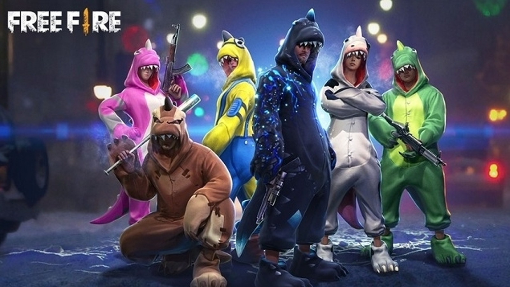

FREE FIRE
Free Fire é um jogo eletrônico mobile de ação-aventura do gênero battle royale, criado pela desenvolvedora vietnamita 111dots Studio e publicado pela
garena
o jogo obteve
um beta aberto em novembro de 2017 e foi lançado oficialmente para Android de iOS em 4 de dezembro de 2017.
O jogo consiste em cinquenta jogadores que caem de paraquedas em uma ilha à procura de armas para eliminar os demais jogadores e equipamentos para aumentar o tempo de sobrevivência na partida.
Garena Free Fire se tornou um sucesso instantâneo, atingindo, até outubro de 2018, a marca de 7,5 milhões de jogadores — refletidos pela quantidade de downloads — somente em dispositivos Android, tornando-se um dos jogos de Android mais baixados de 2018 e batendo grandes títulos.